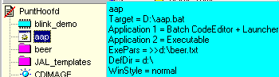
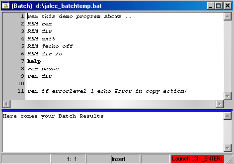
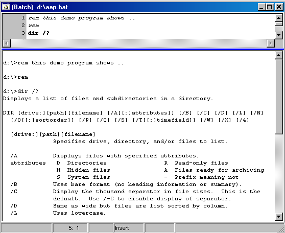
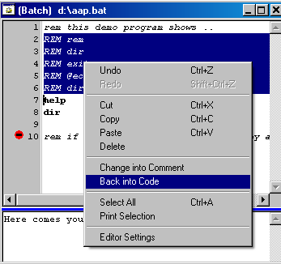
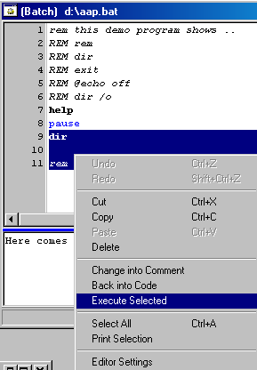
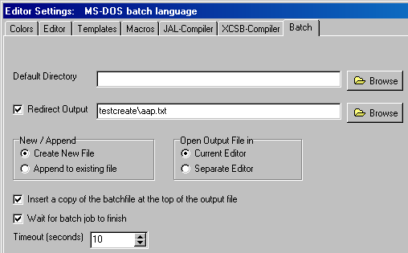
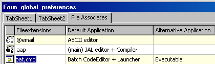
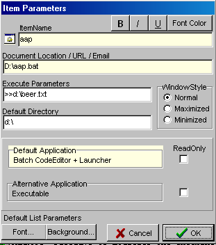

december 2004
Batch CodeEditor
Introduction
Writing Dos Batch programs is, like any other scripting language, always a terrible trial-and-error proces, simply because there's no syntax checking before executing. The codeeditor gives you at least some syntax checking through it's color-coded-highlighter.
The Batch CodeEditor gives you a number of tools to make writing and maintaining batch files a litlle easier. After modifying the batchfile, you can save+run+view output with just one click, still staying active in the editor. Results can be cumulated in the view window (and in a file) and printed.
All general code-editor features, like code completion, macros, bookmarks etc, are functioning.
Example
From the document-list, select the batchfile (or create a new one in the document-list)

After pressing ENTER, the batch file is opened in the code-editor and you'll get this.
Now make your changes, and ...

After pressing Ctrl+ENTER, you get this

What has Ctrl+ENTER done ?
And now you can directly continue to modify the batchjob further.
You can also edit and print the (cumulative) batch output.
The RightMouse menu items "Change into Comment" and "Back into Code" can be used to mark a selected block temporary as comment, or revert the result.

Another usefull tool from the RM-button is the "Execute Selected". It runs a batchjob, consisting of only the selected lines. This is done through a temporary batchfile in the same directory as the original batchfile.

Batch Settings
These settings are used for all batchfiles, launched from the code-editor.
Launching a batchfile from the document-list, uses the individual settings of the item in the document-list.

If the default directory is definied, prior to lauching the batch file (from the code-editor) the dos-directory is set to the specified value, otherwise it's not definied.
Default Application Associates
Here a typical setting of the default application associates for batch and batch-like programs is shown. The alternative application "Executable" enables you to specify default directory and parameters in the document-list settings and to launch the batch file from the document-list.

Individual Settings
Below is an example of a typical individual setting of a batch-job in the document-list.
As you can see the execute parameters ">>d:\beer.txt" indicates that the output of the batchfile should be appended to the file beer.txt. The default directory is changed to the specified value, just prior to launching the batchfile.
